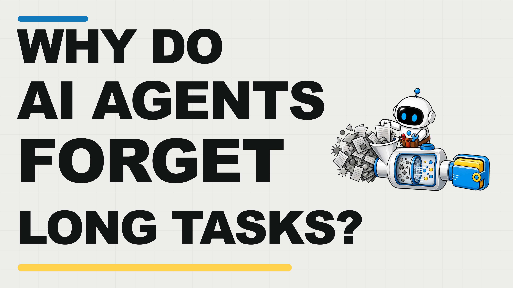

Tiny Agent
Why AI Agents Forget: High-Signal Context for Long Tasks
Why does an AI Agent forget the goal halfway through a long task?
Because information can still be present while the important signal gets
buried.
Anthropic's context-engineering work gives the cause: context is a
finite attention budget.
Old decisions and raw history weaken the next signal.
More context can therefore make an AI Agent less reliable.
You will learn to keep the goal visible, retrieve detail only when
needed, and preserve working state across many steps.
You will also get a six-part high-signal context pack: Outcome,
Operating Rules, Tool Map, Canonical Examples, Retrieval Index, and
Working State.
Save this lesson so you can reuse it on your next long AI Agent task.
Context includes every token available when the model produces its next
response: system instructions, tool definitions, examples, retrieved
documents, message history, intermediate results, and the current
request.
Context engineering manages that whole state, not just the opening
prompt.
Anthropic describes context as finite and subject to diminishing
returns.
Research on context rot shows a recurring pattern: as the amount of
material grows, models can become less reliable at recalling the
relevant item hidden inside it.
A larger window does not make attention free.
This explains why a giant prompt can fail.
The correct rule may be present, yet surrounded by obsolete plans,
repeated explanations, raw logs, and edge cases.
The model must infer which parts are current, authoritative, and
relevant before it can even solve the task.
Good context engineering is therefore selective.
Before every meaningful step, ask what information changes the next
decision.
Keep the goal, necessary constraints, current evidence, and live state.
Move reference detail behind an index when it can be fetched later.
Selection is iterative.
After a tool call, the Agent has new evidence.
After an error, a new boundary becomes important.
After a milestone, raw traces may be replaced by a compact state
summary.
The useful context at step ten is not identical to the useful context at
step one.
Minimal does not mean short.
A complex migration may need extensive acceptance criteria, repository
conventions, and risk controls.
The standard is the smallest set that fully supports the expected
behavior, not the fewest possible words.
First, treat context as a finite attention budget rather than unlimited
storage.
Second, more tokens can dilute the instruction that matters next.
Third, keep the smallest sufficient set and refresh it as the task
changes.
Start with system instructions at the right altitude.
At one extreme, a prompt hard-codes every branch with brittle if-else
logic.
At the other, it says something vague like do a great job and assumes
the Agent shares your unstated expectations.
The useful middle gives clear goals, boundaries, and heuristics while
leaving room to reason.
Organize background, instructions, tool guidance, and output
expectations into distinct sections.
The formatting helps, but the decisive value is the clarity and priority
of the content.
Next, inspect the tools.
A tool is not only an action; it is a contract between the Agent and its
environment.
Names, descriptions, parameters, error behavior, and returned data all
enter context and shape which action the Agent chooses.
Overlapping tools create ambiguous decisions and waste attention.
If a human cannot clearly explain when to use one tool instead of
another, the Agent is unlikely to resolve the ambiguity reliably.
Keep a minimal viable set, return token-efficient results, and let each
tool do one understandable job.
Then curate examples.
A long catalogue of edge cases feels comprehensive, but it can bury the
pattern.
Anthropic recommends a small, diverse set of canonical examples that
show the expected behavior, important variation, and a meaningful
boundary.
High signal is not a fixed token count.
It is information with a clear job: establish the outcome, constrain
behavior, select a tool, demonstrate a pattern, provide evidence, or
expose a stop condition.
Remove material only when it performs none of those jobs.
First, write instructions at the right altitude between brittle and
vague.
Second, keep tools clear, efficient, and minimally overlapping.
Third, teach the pattern with a small set of canonical examples.
Many systems preload every document that might be relevant before the
Agent starts.
That can be fast when the corpus is small and stable, but it also spends
the attention budget before the Agent knows which detail matters.
Just-in-time retrieval uses lightweight references instead: file paths,
stored queries, links, identifiers, folder names, and timestamps.
The Agent keeps the map in context, then opens the specific source when
a decision requires it.
This creates progressive disclosure.
A filename suggests purpose.
A directory reveals structure.
A file size suggests complexity.
One search result narrows the next query.
The Agent assembles understanding layer by layer while keeping only the
active subset in working context.
Claude Code illustrates the pattern.
Stable project instructions can be loaded up front, while file search,
grep, head, and tail let the Agent inspect targeted parts of a large
repository.
It does not need every file body in context at once.
The trade-off is real.
Runtime exploration is slower than preloading, and poor navigation can
waste tokens on dead ends.
The Agent needs good search tools, informative names, and heuristics for
when to stop exploring and act.
Use a hybrid strategy.
Preload stable rules, the current outcome, and the small facts that
almost every step needs.
Keep changing, detailed, or rarely used material behind retrieval
handles.
The right boundary depends on the task and the cost of a missed detail.
First, keep lightweight references instead of every source body.
Second, let the AI Agent discover detail progressively when it becomes
relevant.
Third, balance retrieval focus against the extra time and navigation
cost.
Long tasks create a second problem.
Even well-curated context eventually fills as the Agent takes actions,
observes results, fixes errors, and accumulates decisions.
A task that lasts hours may exceed the usable window several times.
Compaction is the first lever.
Summarize the conversation or trace, start a fresh window, and carry
forward the decisions, unresolved bugs, constraints, evidence, and next
actions needed for continuity.
Raw tool output that has already served its purpose can usually
disappear.
Compaction has a risk: a subtle detail that looks unimportant now may
become critical later.
Anthropic recommends tuning for high recall first, then improving
precision.
Losing a decisive constraint is more expensive than carrying a little
extra context.
Structured notes provide another layer.
The Agent writes progress, milestones, discoveries, and open questions
outside the window, then reloads the relevant note later.
This makes working state durable without keeping the entire conversation
active.
Specialized agents can isolate deep exploration.
A lead Agent keeps the high-level plan while focused agents investigate
separate questions with clean contexts and return condensed findings.
This pays off when parallel research value exceeds coordination cost.
Choose by task shape.
Use compaction for conversational continuity, notes for iterative work
with clear milestones, and specialized agents for independent deep
investigations.
Whichever method you choose, the handoff must preserve outcome,
decisions, evidence, unknowns, and next action.
First, compact long traces into high-recall continuity summaries.
Second, keep durable working state in structured external notes.
Third, use specialized agents only when focused exploration justifies
coordination.
Turn the method into one Minimum High-Signal Context Pack.
It has six parts: Outcome, Operating Rules, Tool Map, Canonical
Examples, Retrieval Index, and Working State.
The pack is small enough to inspect and complete enough to guide real
work.
Part one is Outcome.
State the goal, intended user, deliverable, acceptance criteria, and the
decision the result must support.
This prevents a fluent Agent from optimizing for an attractive output
that does not solve the actual problem.
Part two is Operating Rules.
Record hard constraints, permissions, risk boundaries, escalation
points, and stop conditions.
Separate permanent rules from temporary assumptions so an old workaround
does not silently become policy.
Part three is the Tool Map, paired with Canonical Examples.
For each tool, explain when to use it, what input it expects, what
efficient output looks like, and which nearby tool it does not replace.
Add two or three examples that show the main pattern and an important
boundary.
Part four is the Retrieval Index.
Store lightweight handles to source material with a short purpose label
and a trigger for opening it.
The Agent should know both where the evidence lives and when the
evidence becomes necessary.
Part five is Working State.
Record completed work, current focus, key decisions and evidence,
unresolved questions, failed approaches, and the next concrete action.
Update this state at milestones, then compact or archive the raw trace
it replaces.
First, anchor the AI Agent with Outcome and Operating Rules.
Second, guide action with a Tool Map, Canonical Examples, and a
Retrieval Index.
Third, preserve continuity with a compact, regularly updated Working
State.
An AI Agent does not forget only because information is missing.
It can also lose focus because too much undifferentiated information
competes for a finite attention budget.
First, manage the whole context state, not only the prompt.
Keep goals, constraints, tools, evidence, and current state according to
what changes the next decision.
Second, raise signal quality.
Use instructions at the right altitude, a minimal tool set, and a few
canonical examples instead of brittle rules and edge-case piles.
Third, retrieve detail on demand.
Keep stable essentials up front and let the Agent progressively open
changing or specialized material through clear references.
Finally, protect long tasks with compaction, structured notes, and the
six-part Minimum High-Signal Context Pack.
Keep the signal, retrieve the detail, and preserve the working state.
Follow Tiny Agent.
Tiny Agent helps you get better at using AI.

Follow Tiny Agent
Tiny Agent helps youget better at using AI.